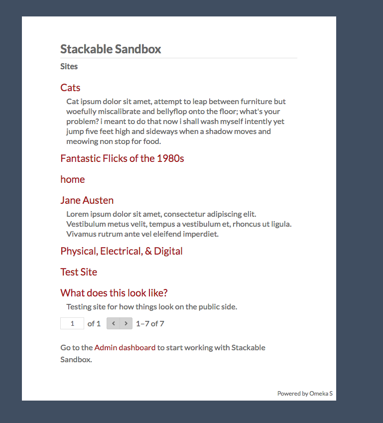

<<<<<<< HEAD
Omeka S allows users to build multiple sites per installation which are not necessarily connected. However, each installation has, by default, a front page which lists the sites in the installation. This page is accessed by going to the main url of your Omeka S installation; if your admin dashboard was at yourdomain.net/omekas/admin, then you would find this page a yourdomain.net/omekas/
=======
Omeka S permet aux utilisateurs de créer plusieurs sites par installation qui ne sont pas nécessairement connectés. Cependant, chaque installation a, par défaut, une page d'accueil qui répertorie les sites de l'installation. Cette page est accessible en accédant à l’URL principale de votre installation Omeka S; Si votre Tableau de bord était de type votredomaine.net/omekas/admin, alors vous trouverez cette page sur votredeomaine.net/omekas/
[FR] Traduction française - fr-v0.1
La page affiche tous les sites qu'un utilisateur est autorisé à voir, ainsi que le résumé du site, le cas échéant. Si quelqu'un n'est pas connecté, il ne verra que les sites publics. En revanche, un administrateur global connecté verrait tous les sites existants sur l'installation.

<<<<<<< HEAD
If you want this site to be hidden from site visitors, you can use the setting Default Site to select a public site on your installation to which visitors will be redirected when they navigate to your base url (yourdomain.net/omekas/)
You can use the Default Site option in conjunction with the site page block "List of sites" to create a branded site index and to add an about page for the overall installation.
Si vous souhaitez que ce site soit masqué des visiteurs du site, vous pouvez utiliser le paramétrage du Site par défaut pour sélectionner un site public sur votre installation vers lequel les visiteurs seront redirigés lorsqu'ils navigueront vers votre URL de base (votredomaine.net/omekas/)
Vous pouvez utiliser l'option Site par défaut avec l'option bloc de page de site "Liste de sites" pour créer un index de sites et pour ajouter une page à propos de l'installation globale.
[FR] Traduction française - fr-v0.1